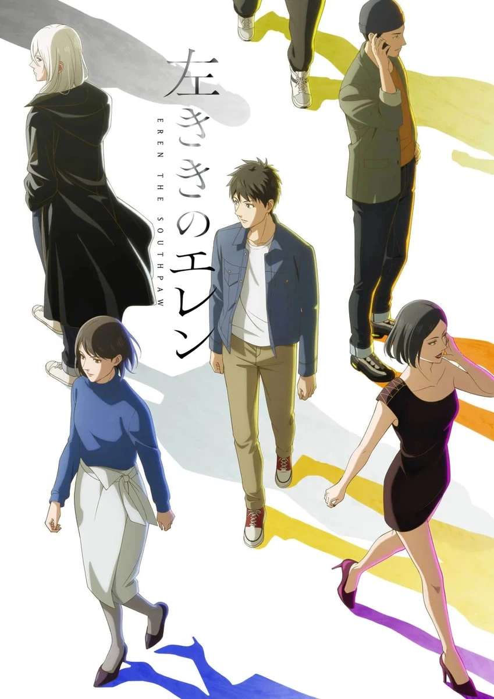

COMPLETE RECORD · Pages 轻量资料
左撇子艾伦
左ききのエレン
别名
- Hidarikiki no Eren
- Eren the Southpaw
- 形式
- TV
- 首播
- 2026-04-07
- 集数
- 13 集
- 评分
- 6.1
- 评分人数
- 928
SYNOPSIS
简介
追逐梦想却苦于才能极限的凡人「光一」，与因天赋过人而孤独痛苦的天才「艾伦」。在人生的十字路口短暂擦身而过的两人，将成为彼此一生难忘、无可取代的存在。选择成为设计师的光一，等待他的是广告界身经百战的职场老手们；投身世界艺术舞台的艾伦，也将面对怪物般的艺术家们。在充满未曾有才华与野心的创作战场中，两人不断挣扎、跌倒，却依旧选择挑战。一段刺痛心灵又挥之不去的鲜烈青春物语，正式揭开序幕！
[简介原文] 高校生活も半分が過ぎ、誰もが本格的に進路を考えはじめる頃。デザイナーになるため美大を目指す朝倉光一は、ある日、美術館の壁に殴り描きされたグラフィティに衝撃を受ける。描いたのは、ある出来事をきっかけに才能を封じ込めてきた、左ききの女子高生・山岸エレンだった。 いつしか二人は「描く」ことを通じてお互いを認めあい、光一はデザイナー、エレンは画家への道を歩み始めるが――。
EPISODE LOG
正片章节
已收录 13 条正片章节
- 1横滨的巴斯奇亚 首播：2026-04-07时长：25 分钟
- 2接下来才要开始 首播：2026-04-14时长：24 分钟
- 3毕竟我这个人徒有干劲 首播：2026-04-21时长：24 分钟
- 4当遇见最棒的团队时 首播：2026-04-28时长：24 分钟
- 5照亮别人的那种人生 首播：2026-05-05时长：24 分钟
- 6隔岸相望的两人 首播：2026-05-12时长：24 分钟
- 7不准让那个人幸福 首播：2026-05-19时长：24 分钟
- 8少瞧不起这份工作 首播：2026-05-26时长：24 分钟
- 9我将绽放光芒而消逝 首播：2026-06-02时长：24 分钟
- 10结果我的人生还没开始 首播：2026-06-09时长：24 分钟
- 11左撇子艾伦 首播：2026-06-16时长：24 分钟
- 12无懈可击的我 首播：2026-06-23时长：24 分钟
- 13献给没能成为天才的所有人 首播：2026-06-30时长：24 分钟